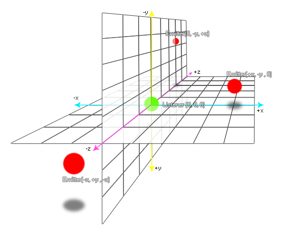

Avec cette fonction, vous pouvez changer la position d'un émetteur audio dans l'espace audio 3D. La position affectera le son de différentes manières en fonction de l'emplacement de l' écouteur dans l'espace audio (la position par défaut est (0, 0, 0). audio_listener_position pour plus d'informations), par exemple si la position de l'émetteur est définie sur (100, 0, 0) et que l'écouteur actuel est sur (200, 0, 0), l'audio diffusé par l'émetteur apparaîtra à gauche du champ audio. L'image ci-dessous montre une représentation visuelle des émetteurs et de leurs positions relatives à l'auditeur: 
audio_emitter_position(emitter, x, y, z);
| Argument | La description |
|---|---|
| emitter | L'indice de l'émetteur à changer. |
| x | La position x. |
| y | La position y |
| z | La position z. |
N/A
if speed > 0
{
audio_emitter_position(s_emit, x, y, 0);
}
Le code ci-dessus vérifie si la vitesse de l'instance est supérieure à 0 et, si c'est le cas, met à jour l'émetteur audio indexé dans la variable "s_emit" à la position x / y actuelle.